QuotePilot 技术总览
面向企业采购询价的报价智能体。MOI 原生工作流编排 Genesis 模型与 MatrixOne SQL 节点，FastAPI 校验字段证据，Decimal 引擎核价，双角色审批后生成带版本的正式文件。
快速上手指南
首次登录，用管理员访问码
复制管理员演示码 QP-Judge-Admin-26M，打开登录页，粘贴到「访问密码」框，点「进入工作台」。首次打开若看到加载页，请稍等约一分钟。
登录后点「开始一笔新报价」，先上传第一步客户询价邮件（EML，含 1 行）。到「供应商比价与报价」时，再上传供应商报价单（PDF）。
核对供应商报价和业务审核时，切换为业务复核员，演示码为 QP-Judge-Review-26M。业务审核通过后，用管理员码登录，打开同一报价编号完成批准。
共享演示空间仅用于合成文件。实例重置后可重新下载样例开始。
- 从哪里开始
- 上传客户原件
- 让 AI 整理询价
- 对照邮件确认建议
- 确认用于报价的需求行
- 整理并确认供应商报价
- 计算售价并比较方案
- 业务复核员审核
- 管理员批准同一份报价
- 下载正式 PDF 和 Excel
- 客户改了数量怎么办
- 常见问题
从哪里开始
采购员收到一封询价邮件，要回答客户「这三件阀件多少钱、多久能交」。准备客户原件和供应商报价，最后交付有审批记录的正式报价单。
打开工作台，点击「开始一笔新报价」。管理员负责导入与 AI 整理，业务复核员核实并审核，管理员独立批准。
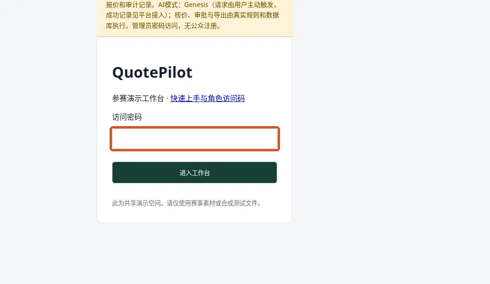
橙框标出操作位置，点击图片可放大。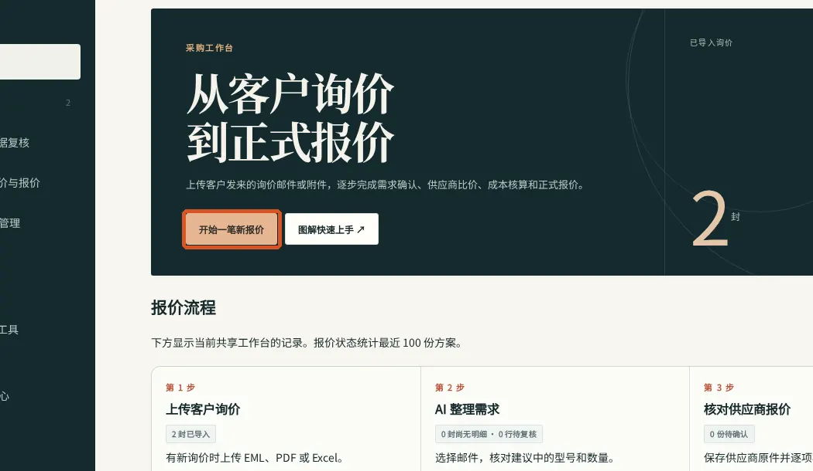
橙框标出操作位置，点击图片可放大。上传客户原件
在上传区域选择样例 EML，点击「检查文件内容」。核对主题、附件及识别行数，再点「确认写入系统」。单独上传 PDF、XLSX 时按提示填客户邮箱。
导入后，收件清单会选中该邮件。入门邮件会显示 1 行。选择「核对这行需求」后可以继续第三步。若再次上传同一封邮件，会回到已导入的记录。
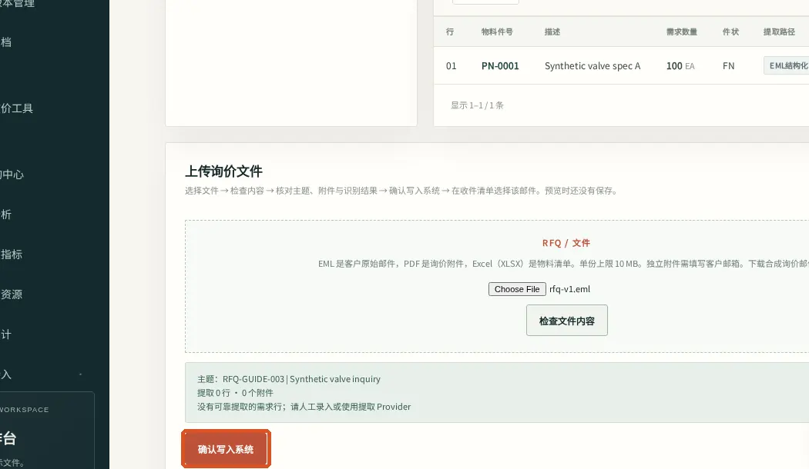
橙框标出操作位置，点击图片可放大。让 AI 整理询价
要体验 AI，可下载自然语言询价邮件，在第一步上传。初次预览显示 0 行，请先确认写入。管理员选中这封邮件，点击「AI 自动整理客户询价」，勾选合成文件，再点「启动处理」。稍候刷新进度。
完成后点「查看提取结果并核对原文」。只有原生处理不可用时才选择备用 Genesis。已有完整明细可直接核对。
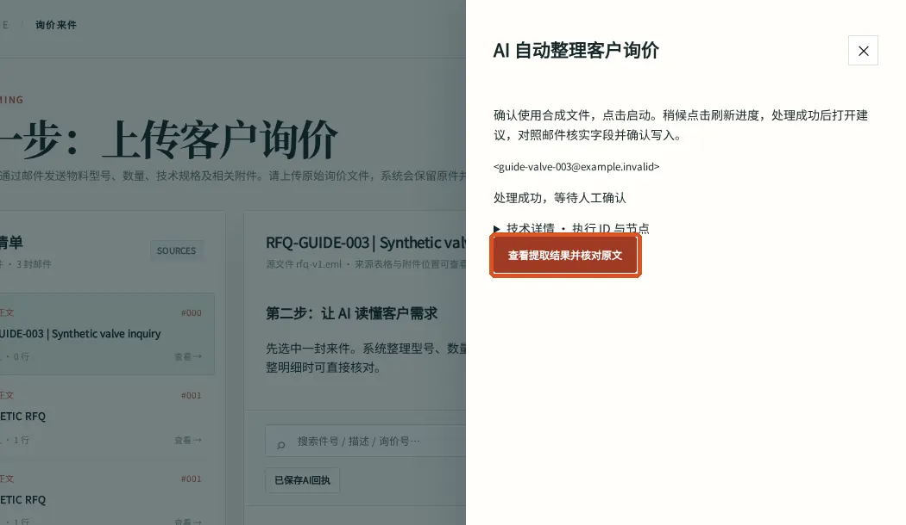
橙框标出操作位置，点击图片可放大。对照邮件确认建议
对照原文核实型号 PN-0001、数量 3、单位 EA、件状 FN。先看同屏的邮件主题和原文。核实预填的询价号 RFQ-GUIDE-003、规格 Synthetic valve spec A；未识别的字段请对照原件补充。
复核人默认显示当前角色。内容一致时勾选核对声明并保存；修改已有建议时填写修改依据。看到已保存的型号和数量后，点「下一步：核对供应商报价」。
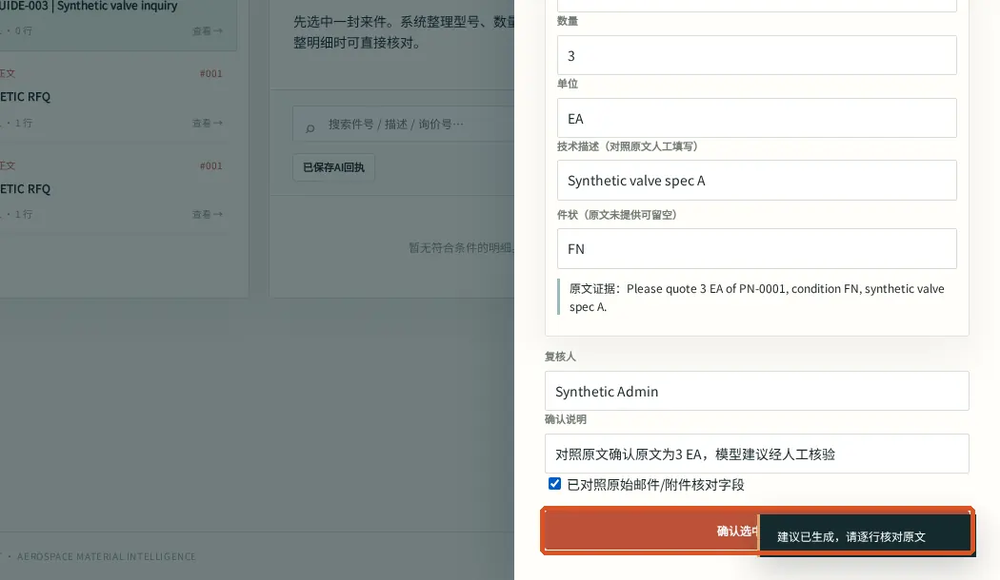
橙框标出操作位置，点击图片可放大。确认用于报价的需求行
从收件明细点「核对这行需求」，或在需求与证据复核页选「核对原文」。检查原始值、原文片段与当前确认值。
记录核对人、原因并勾选声明，保存字段。点击「用这行需求继续报价」。切换账户后可在报价表中重新选择同一行。
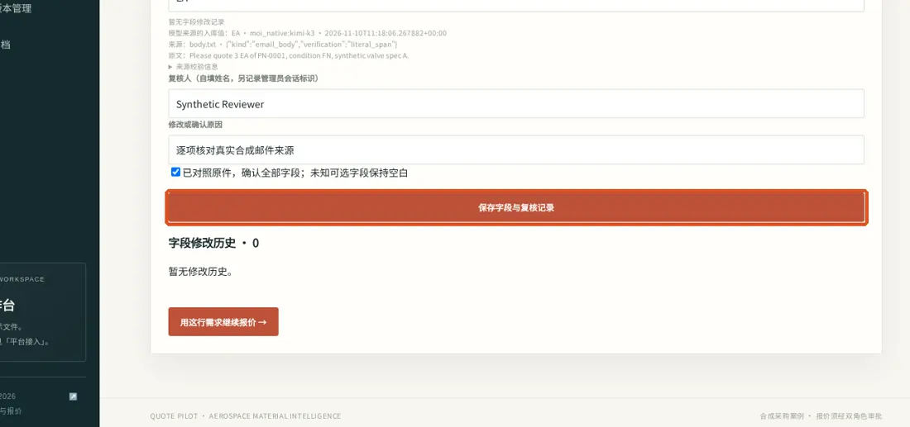
橙框标出操作位置，点击图片可放大。整理并确认供应商报价
在供应商比价与报价页上传第三步的供应商报价 PDF，点击「上传并检查报价单」。按候选点「填入表单并人工核对」。
核实物料规格、币种、单价、税运费、MOQ 和交期，保存为待复核报价。填写复核人和依据，再对该条点「核对原件后确认」。对其他候选重复；已确认的同一原件可直接使用。
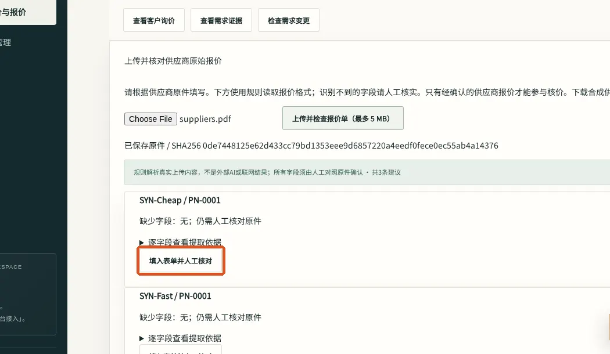
橙框标出操作位置，点击图片可放大。计算售价并比较方案
选择这笔需求，填写报价公司、客户、付款及交付条件。样例加工费每件 1 元，整行其他费用 2 元，目标毛利率 20%。检查日期后生成三个方案。
点击各方案查看入选供应商、分项成本、交期和排除原因。本例最低成本为 35 元，销售单价 14.58 元，三件合计 43.74 元。
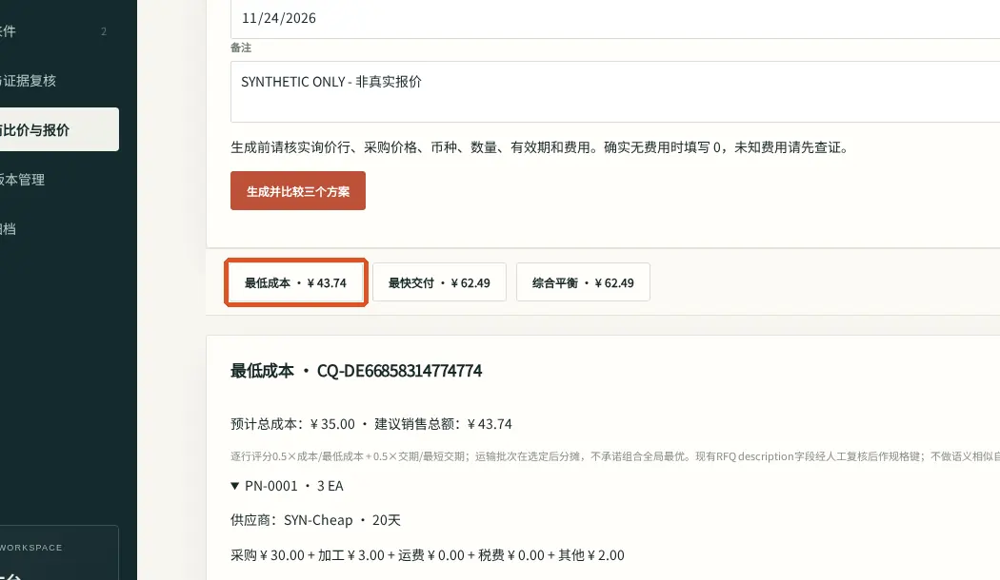
橙框标出操作位置，点击图片可放大。业务复核员审核
记下要选的报价编号。业务复核员打开此方案，核对需求、供应商、分项成本和交付条件。
填写姓名及审核依据，勾选风险确认，点击「业务审核通过」。工作台将显示待管理员批准。
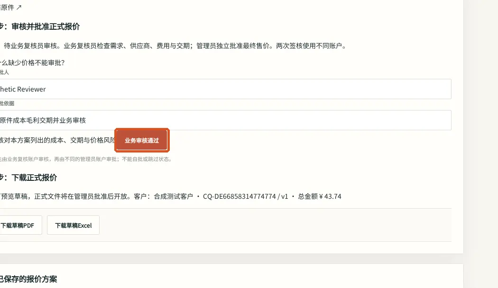
橙框标出操作位置，点击图片可放大。管理员批准同一份报价
用管理员会话在工作台最近报价中找到同一编号，核对客户、金额和业务审核记录。
填写审批人及依据，确认风险，点击「管理员审批通过」。同一个账户无法完成这两道签核。
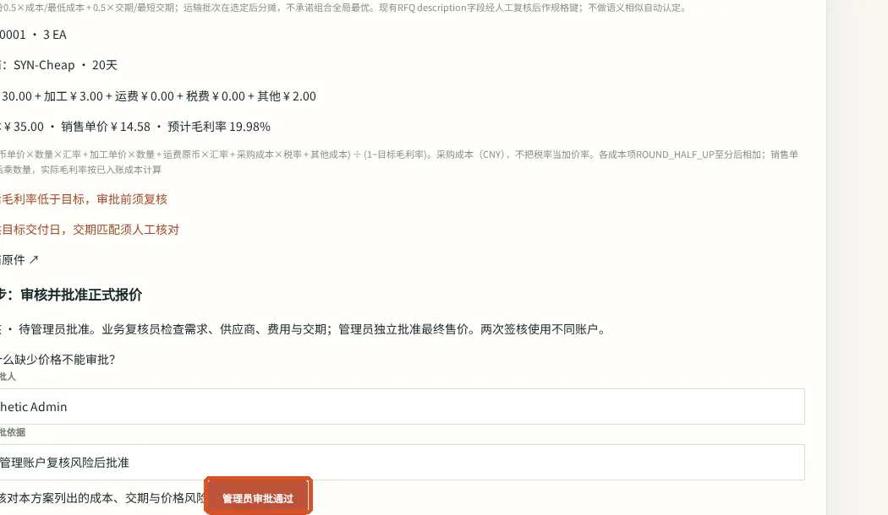
橙框标出操作位置，点击图片可放大。下载正式 PDF 和 Excel
打开报价归档，选择已批准的商业报价，查看第六步。核对编号、版本、客户、物料数量、单价及总额。
点击正式 PDF 或正式 Excel 并保存。管理员可另外保存到云端并核验；下载文件可直接交付。
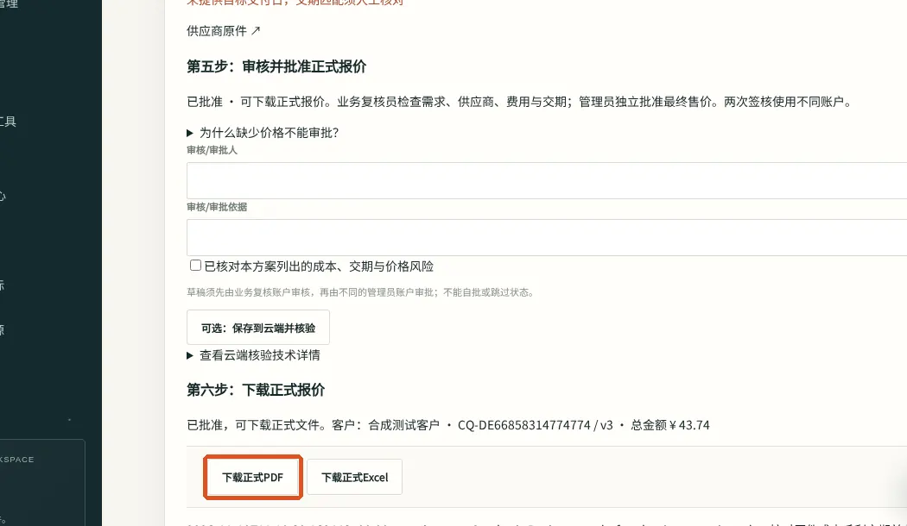
橙框标出操作位置，点击图片可放大。客户改了数量怎么办
将更新邮件作为新来件导入。在 RFQ 版本管理中，为同一客户与询价号登记原版和新版，比较两个版本并查看受影响的报价。
按新数量重新核价并签核。起订量、运费分摊及舍入都可能使新单价发生变化。
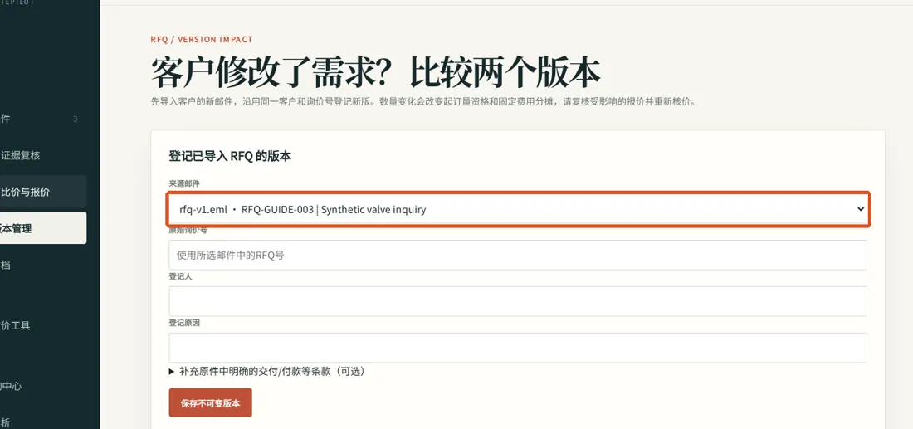
橙框标出操作位置，点击图片可放大。常见问题
看不到 AI 按钮，先查看当前角色；启动后没有结果，回到同一来件刷新；明细缺必填字段，向客户核实后再确认。
生成方案后若无法审核，查看方案列出的具体原因，核实规格、单位、件状、数量、有效期和费用。批完找不到文件，请从「报价归档」打开同一编号的已批准版本。
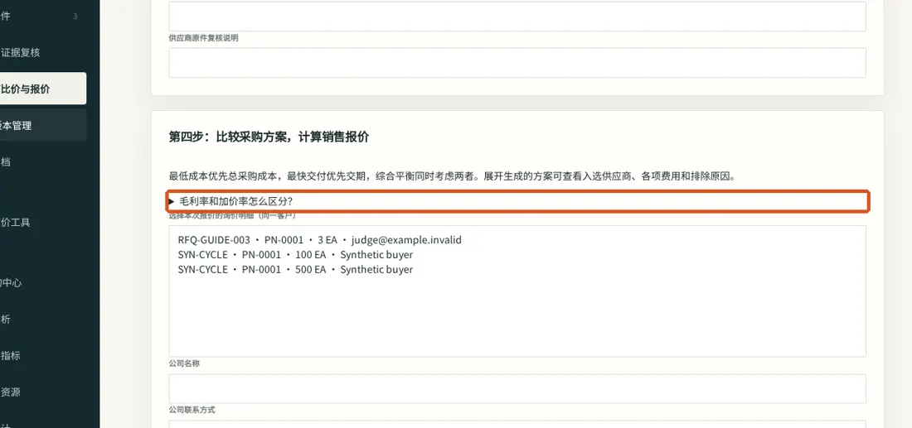
橙框标出操作位置，点击图片可放大。